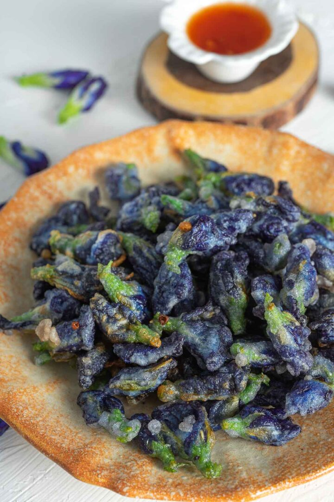

Crispy Fried Pea Flower

Crispy Fried Butterfly Pea Flowers are exotic and delicious Thai street food. They’re pretty rare to find but you can easily make them under 30 minutes at home!
INGREDIENTS
- 1 cup tempura flour
- 1 teaspoon salt
- 2 teaspoons sugar
- 0.165 pounds butterfly pea flowers
- 1 litre oil
INSTRUCTIONS
- Pour tempura flour, salt and sugar into a mixing bowl.
- Add cold water to the bowl.
- Mix with a spoon until smooth.
- Add butterfly pea flowers to the batter.
- Mix the flowers with the batter, making sure that every flower is coated on all sides.
- Heat oil in a pan over medium-high heat.
- Once the oil starts to bubble, drop the flowers into the pan, one at a time and about 15-20 flowers per batch.
- Fry for 2-3 minutes. Flip the flowers with a slotted spoon constantly so that every side is equally cooked and doesn’t burn.
- Transfer the flowers to a serving dish with a slotted spoon.
- Serve immediately with Thai sweet chili sauce.
Return to recipes list